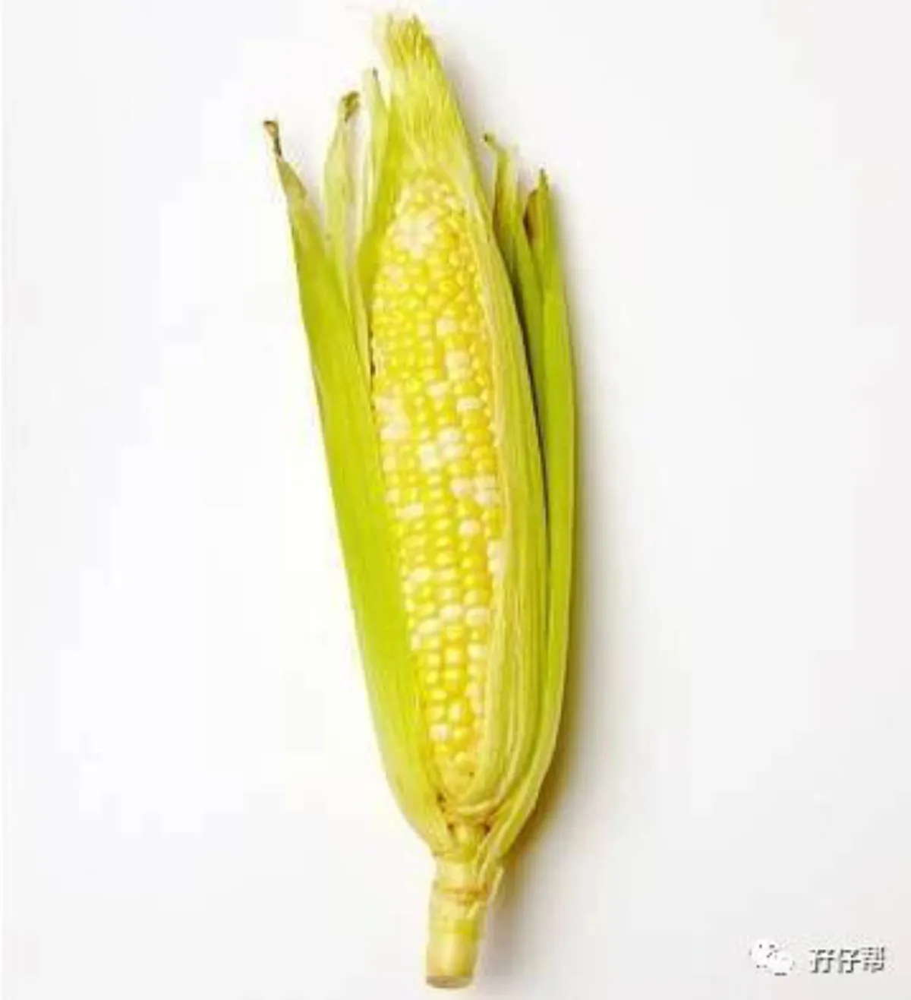
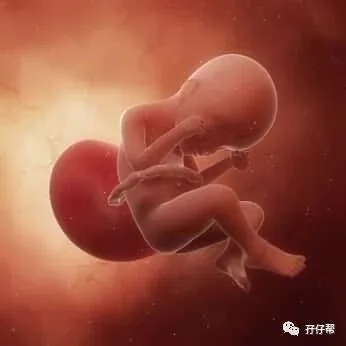
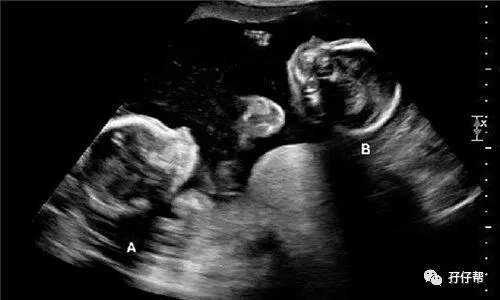
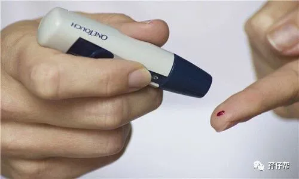
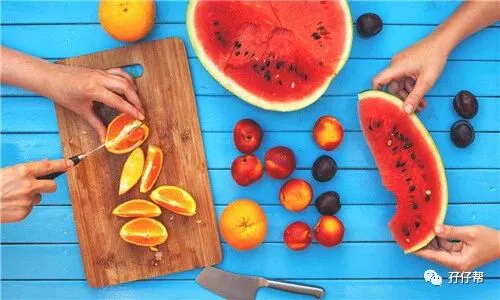

文|圆圈妈 一个文思如尿崩的双胎妈妈
图|来自网络
· 正 · 文 · 来 · 啦 ·
【01】两胎儿的发育情况
孕24周的胎宝宝有玉米棒那么长了，从头部到臀部长约27.5CM，约482G，如图所示▼
孕24周的双胞胎胎儿发育图▼
B超孕24周的双胞胎胎儿影像图▼
【02】圆圈妈的孕期回忆录
Ⅰ 给我上！第五次产检！
4月30日，赴约双胎妊娠的第五次产检。
可能是三维彩超的顺利通关给我吃了个定心丸，这次产检我表现得异常淡定，一大早就雄赳赳地拖着圆圈爸往市二医院赶去。
等待我的将是一个特别艰巨的任务：葡萄糖耐糖测试（GTT）。
但我一点都不担心耐糖测试过不了。
就冲我孕期吃得那些连狗都嫌吃了会营养不良的家常小菜，若真的查出个血糖高，恐怕我这下半辈子都不敢大鱼大肉地胡吃海喝了！
被上次那位副高级别的罗医生吓怕了，这次产检约了周医生，我才不在乎周医生的职称，我只知道周医生很对我的口味。
Ⅱ 耐糖测试（GTT）是戒掉女人爱吃甜品的咒语
耐糖测试过程很折腾，想必推行这种测血糖方式的那位，必定是没有生育能力的女人，不然，怎么会那么歹毒啊！
空腹抽了一管血，已经有点晕晕了，接着五分钟之内就要喝完糖水。
我听说可以喝糖水，可高兴了，脑海里马上进入点餐环节，我要芒果椰汁西米露，或者木瓜椰奶也行…
怎知，此糖水非彼糖水！
这糖水听着很“小龙女”尝着就是一股“灭绝师太”的味道！
那种甜味实在太诡异了，喝进去时感觉有人往我嗓子里放火烧，灼热般难受，甚至想吐出来。
我喝完后，对天发誓，从此与甜食恩断义绝！
喝完糖水后，还要煎熬地等待一个小时，继续抽血第二次，接着再来一个小时的等待后，抽第三针血。
总共采血3次，葡萄糖耐糖测试才结束！
好在如我所料，我的葡萄糖耐糖测试顺利通过！
跟我一起去找医生看结果的单胎妈妈就没那么幸运了，餐后血糖10，被医生勒令严格控制饮食，7天后复查。
真心替她难过。
本来孕妇能吃的机会就不多，早孕期，吃不下，晚孕期，吃不得，就靠中孕期，多吃点。
结果这能大吃特吃的节骨眼上，吃货之路居然被“限行”了！
真是天意弄人啊！
☞☞TIPS☜☜：孕24—28周之间是妊娠糖尿病筛检时间，是中孕期一个很重要的产检项目。
目的是查出可能出现妊娠糖尿病的孕妇，以便做进一步检查确诊。
不管是双胎还是单胎，都要认真对待糖筛！
第一次糖耐若不通过，先不急，如果升高不是很多，建议几天后复查，但在复查之前，所有饮食都将严格控制糖分的摄入量。
糖耐没通过不代表你就不安全，同理，糖耐通过了不代表妊娠糖尿病就不会盯上你。
有些吃货性质的准妈妈糖耐通过后，如获大赦，大开杀戒，胡吃海喝...
结果孕后期查出妊娠糖尿病，后果就是天天砸手指，天天见血，没有一个手指头是完好无损的。
双胞胎孕期群也有很多“糖妈妈”，看她们每天晒出来的菜谱，我觉得人生好灰暗啊。（走开，别拦着我，豆腐墙在哪里？）
面条多吃一根都不行，米饭多吃一粒都不让，不管什么食物都要算计好，掂量好，精确到多少克！
想吃炸鸡配可乐？做梦比较快！作死也很容易！
Ⅲ 我贫血了
走到24周，一路都是绿灯，这次产检却亮起了黄灯！
血常规结果显示，血色素99G/L，意思是我贫血了！孕期缺铁性贫血！
这是怀孕以来第一次遇到抽血化验项目的异常。
还好不是很严重，医生开了生血宁片。
我对吃铁剂比较抗拒，总觉得不管怎样都是药，药补远不如食补！
犹豫了许久才去缴费取药，也没有按照说明书上的要求服用，吃了第一天，第二天忘记吃，或者一天吃三次，却只吃了一次。
☞☞TIPS☜☜：发现贫血，一定要及时纠正！我就是一个反面教材！请准妈妈务必引以为戒！
因为对贫血不重视， 铁剂没有按需按量吃，导致我的血色素持续下降，等到后悔已经为时已晚。
剖腹产时只有82G/L，被紧急打了两只止血针（正常是一针就够了）还被迫输血以纠正贫血。
在缝合的时候，子宫还在渗血，好在福大命大，第二针止血针打下去后，血止住了！
除了我在术中失血过多，圆圈刚出生后也被查出贫血，而新生儿贫血的后果就是体质差，易生病....哭闹的时候口唇会发紫。
因此，为了两胎儿和母体着想，不管你在哪个孕周发现贫血，都应该想尽一切办法在生产前把贫血纠正过来。
推荐一个补铁的进口药，琥珀蛋白硫酸亚铁，比较贵，但因为是液态铁剂，相对铁片和胶囊，对肠胃的刺激较小，副作用较少。
请大家各自斟酌下利弊选择适合自己的补铁药，最重要的是遵医嘱，在这个事情上，别太自以为是！
另外，除了药补，食补也很重要，多吃红肉和动物内脏，但很容易导致蛋白质超标，增加肝肾的代谢负担， 注意有所节制，可别顾己失彼哦！
孕后期发现贫血还指望着食补其实已经来不及了，双胎妈妈应该在中孕期初期，征询医生意见开始吃补铁药，而不是等到发现贫血了才想到去弥补纠正。
这无异于蚍蜉撼大树！
Ⅳ 尿蛋白发现+号
除了血常规出状况，我的尿常规也有异常，尿蛋白提示一个+。
这可把我吓得不轻，不会是得了肾病吧，赶紧问了度娘，妈呀，子痫征兆啊！
我哆嗦地问医生，尿蛋白的“+”严重吗？
医生快速扫了一眼我的化验单，问我是不是经常吃鸡蛋。
的确，可能上辈子被母鸡家族挖墙脚，我这辈子复仇非要灭她后代，以此泄愤...
截止到孕24周，我已经消灭了约250个鸡蛋，不是“经常”而是“很经常”
医生看了我的血压正常，对尿蛋白的异常没有说什么，只让我饮食上加强营养，均衡饮食，注意血压，控制体重，勤数胎动。
☞☞TIPS☜☜：尿常规怀孕以后每次产检都需要检查尿常规，在尿常规报告中经常会出现白细胞、红细胞、尿蛋白的“＋”号。
遇到这种情况不必担心，多数是送化验时留小便不规范，有污染所致。
建议下次出门去医院之前清洁外阴，在医院留小便时先把前面一段小便小掉，留取中间一段小便（清洁中段尿）。
对于尿路感染来讲，除了尿液中出现白细胞、红细胞、尿蛋白以外，还会有尿急、尿频、尿痛等临床症状，尿液细菌培养会呈阳性。
如果连续的清洁中段尿检查还是出现尿蛋白“＋”，就要引起重视，需要除外肾脏疾病或子痫前期的可能。
至于尿常规中经常出现的尿糖“＋”号，也不必担心，因为怀孕之后“肾糖阈”下降，即使血糖水平正常，尿液里也会出现尿糖“＋”号。
究竟是不是妊娠期糖尿病，还是要看孕24-28周的糖尿病筛查结果。
来源：段涛大夫《怀孕生孩子那些事 之 为你解读产检化验检查报告》
Ⅴ 体重，断崖式飙升
这周的体重涨幅有点猛，孕24周的体重已经增长到63KG了，较上次20周59.5KG，居然涨了7斤。
我突然发现原本粗壮的手臂在孕肚的陪称下显得格外纤细。
那硕大的臀围似乎还得继续横向发展才能与日渐隆起的肚子“门当户对”
我对“身材”已经无欲无求了！只要不出幺蛾子，这点牺牲算什么呢？（老身又不是没有胖过！）
就酱…我的双胎妊娠第五次产检，顺利过关！
☞未完待续☜
上期推文:
连载（一）|圆圈妈双胞胎怀孕过程第4周
连载（二）|圆圈妈双胞胎怀孕过程第5周
连载（三）|圆圈妈双胞胎怀孕过程第6周
连载（四）|圆圈妈双胞胎怀孕过程第7周
连载（五）|圆圈妈双胞胎怀孕过程第8周
连载（六）|圆圈妈双胞胎怀孕过程第9周
连载（七）|圆圈妈双胞胎怀孕过程第10周
连载（八）|圆圈妈双胞胎怀孕过程第11周
连载（九）|圆圈妈双胞胎怀孕过程第12周
连载（十）|圆圈妈双胞胎怀孕过程第13周
连载（十一）|圆圈妈双胞胎怀孕过程第14周
连载（十二）|圆圈妈双胞胎怀孕过程第15周
连载（十三）|圆圈妈双胞胎怀孕过程第16周
连载（十四）|圆圈妈双胞胎怀孕过程第17周
连载（十五）|圆圈妈双胞胎怀孕过程第18周
连载（十六）|圆圈妈双胞胎怀孕过程第19周
连载（十七）|圆圈妈双胞胎怀孕过程第20周
连载（十八）|圆圈妈双胞胎怀孕过程第21周
连载（十九）|圆圈妈双胞胎怀孕过程第22周
连载（二十）|圆圈妈双胞胎怀孕过程第23周
下期预告：
连载（二十二）|圆圈妈双胞胎怀孕过程第25周
-END-
重磅互动
#你希望写什么育儿经验干货？#
评论区聊一聊
随便提，万一下篇就写了呢？
关于这个号
谢谢关注！
我是圆圈妈
85后，全职妈妈
家有孖仔两枚，圆圈&圈圈
双胞胎育儿公众号：孖仔帮
ID:twinsbang
旨意分享双胞胎育儿经验帮助双胞胎家庭
有经验可循
有组织可靠
希望我的经验对您有所启发
期待与您一起共享双胞胎育儿经
孖仔帮目前有5个双胞胎微信社群
孕期群，喂养群，闲置群
爸爸群，教育群
如需入交流群
添加微信号sgguy-com
或扫描下方二维码⬇⬇
申请入群
入群暗号：双胎宝妈/宝爸，孕期/已生
往期回顾
105：同卵双胞胎的天敌--双胞胎输血综合征
106：官宣：双绒双羊，单绒双羊，单绒单羊傻傻分不清？一篇消除你所有疑问
215：双胎子宫日记系列|（下）你看不看？双胞胎妈妈直播剖腹产全过程
306：真人示范！双胞胎妈妈高难度喂母乳技巧
312：为出生就进NICU的双胞胎新生儿，我必须告诉你这5个通关秘籍
407：嘿！双胞胎孩子的亲子阅读攻略，要来一份吗（1--2岁阶段）
605：看过这份最简单的双胞胎宝宝用品囤货清单，其他的都是将就
608：听说...你在找双胞胎育儿神器，这事儿我熟！
723：双胎妈妈，为什么我不建议你这样坐月子...
⬇⬇长按下方二维码，关注孖仔帮
回复文章编号数字即可阅读
更多养育双胞胎知识，尽在双胞胎育儿网站
请猛戳 "阅读原文"
或长按下方二维码直达⬇⬇
点击“阅读全文”，直达双胞胎育儿网站




